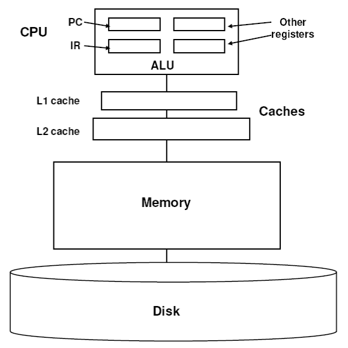

CS 2150 Roadmap
Data Representation | Program Representation | |||||
| string int x[3] char x 0x9cd0f0ad 01101011 |
Objects Arrays Primitive types Addresses bits |
Java code C++ code C code x86 code IBCM hexadecimal |
High-level language Low-level language Assembly language Machine code |
|||
Memory Hierarchy, part 1
|  |
|
Memory Hierarchy, part 2
|
IBCM Machine Description: Memory
|  |
IBCM instruction format
| 15 | 14 | 13 | 12 | 11 10 | ... | 0 | |
| 0 | 0 | 0 | 0 | |
(unused) | halt | |
| 0 | 0 | 0 | 1 | I/O op |
(unused) | I/O | |
| 0 | 0 | 1 | 0 | shift op |
(unused) | count | shifts |
| opcode | address | |
others | ||||
IBCM "other" instructions
| Op | Name | HLL meaning | Description |
|---|---|---|---|
| 3 | load | a := mem[addr] | load accumulator from memory |
| 4 | store | mem[addr] := a | store accumulator into memory |
| 5 | add | a := a + mem[addr] | add memory to accumulator |
| 6 | sub | a := a - mem[addr] | add memory from accumulator |
| 7 | and | a := a ∧ mem[addr] | logical 'and' memory into accumulator |
| 8 | or | a := a ∨ mem[addr] | logical 'or' memory into accumulator |
| 9 | xor | a := a ⊕ mem[addr] | logical 'xor' memory into accumulator |
| A | not | a := ~a | logical complement of accumulator |
| B | nop | /* */ | do nothing (no operation) |
| C | jmp | goto addr | jump to 'addr' |
| D | jmpe | if a == 0 goto addr | jump to 'addr' if accumulator equals zero |
| E | jmpl | if a < 0 goto addr | jump to 'addr' if accum. is less than zero |
| F | brl | a := PC+1; goto addr | jump (branch) to 'addr'; set accum. to the value of the PC just before the jump (i.e., to the address following the `brl`) |
IBCM Machine
|
|
Sample Program
|
|
How Would You Code This?
if (B == 0)
S1;
else
S2;
How Would You Code This?
while(B >= 5)
S;
What's missing from IBCM?
- Integer multiply and divide
- Floating point support
- A bigger address space
- More than 1 user register
- What else?